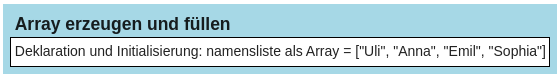
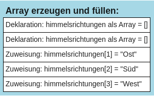
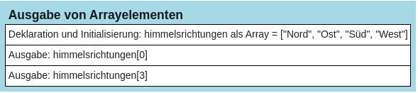
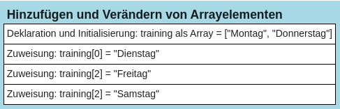
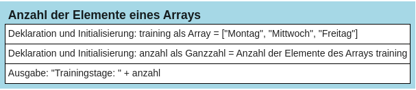

#Deklaration und Initialisierung
namensliste = ["Uli", "Anna", "Emil", "Sophia"]Arrays
Arrays sind spezielle Datenstrukturen, die nicht nur einen Wert, sondern eine Vielzahl von Werten speichern können.
Arrays sind vergleichbar mit einem Schrank: Ein Schrank hat Schubladen. Die verschiedenen Schubladen des Schranks bieten Platz für die Werte, mit denen man arbeiten will, z.B. die Vornamen verschiedener Personen. Man kann die Werte quasi in den Schubladen ablegen. Um die Werte später wiederfinden zu können bzw. mit ihnen arbeiten zu können, haben alle Schubladen eine Nummer, die man sich auch als Beschriftung vorstellen kann.
Beispiel:
Ein „Schrank“ für das Abspeichern von Vornamen:
| Nummer der Schublade: | 0 | 1 | 2 | 3 | 4 | 5 |
| Inhalt: | “Uli” | “Anna” | “Emil” | “Sophia” | “Luise” | “Hans” |
Wichtig:
- Die Nummerierung der „Schubladen“ wird in der Fachsprache als „Index“ bezeichnet, d.h. die verschiedenen Speicherplätze des Arrays sind „indiziert“.
- Die Nummerierung der Schubladen beginnt immer bei dem Index „0“, d.h. die erste Schublade hat die Beschriftung 0, die zweite Schublade die Beschriftung 1, die sechste Schublade hat die Beschriftung 5.
Deklarierung und Initialisierung in Python
In Python werden Arrays mit Hilfe von sogenannten Listen umgesetzt. Dabei gibt es in Python verschiedene Möglichkeiten, diese zu erzeugen. Der Einfachheit halber werden wir immer von einem Array sprechen. Zwei Möglichkeiten werden hier vorgestellt:
Möglichkeit 1:
Erzeugen eines Arrays und direktes Füllen mit Werten:

Möglichkeit 2:
Hier wird zunächst ein leeres Array erzeugt und dann schrittweise mit Werten gefüllt, indem die Werte mit Hilfe der Funktion append()nach und nach an das Ende des bestehenden Arrays angehängt werden:
#Deklaration
himmelsrichtungen = []
#Initialisierung
himmelsrichtungen.append("Nord")
himmelsrichtungen.append("Ost")
himmelsrichtungen.append("Süd")
himmelsrichtungen.append("West")
Im Ergebnis ist hier das folgende Array entstanden:["Nord", "Ost", "Süd", "West"] ### Zugriff auf die einzelnen Arraywerte mit dem Index Auf die einzelnen Arrayelemente kann mit dem Index zugegriffen werden. Dazu gibt man den Namen des Arrays an und direkt dahinter in eckigen Klammern die Nummer des gewünschten Arrayelementes, z.B.: array[3]
Dabei gilt es zu beachten, dass auf das erste Element in einem Array mit dem Index 0 zugegriffen wird (vgl. oben). Für das zweite Element wird der Index 1 benutzt, für das dritte Element der Index 2, usw.:
| Nummer des Arrayelements / Index: | 0 | 1 | 2 | 3 | 4 | 5 |
| 1.Wert | 2.Wert | 3.Wert | 4.Wert | 5.Wert | 6.Wert |
Folglich wird auf das letzte Element (hier das sechste Element bzw. n-te Element) in einem Array mit dem Index n-1 zugegriffen, in diesem Beispiel also mit dem Index 6-1 = 5.
himmelsrichtungen = ["Nord", "Ost", "Süd", "West"]
print(himmelsrichtungen[3])
print(himmelsrichtungen[0])West
Nord
Hinzufügen und Verändern von Elementen
Arrays (Listen) sind in Python nicht abschließend, das heißt, es können, wie schon oben gezeigt, mit append() weitere Elemente hinzugefügt werden. Außerdem sind die Elemente auch nicht fest. Dadurch können bereits bestehende Elemente mit neuen Werten überschrieben werden. Das geschieht wie beim Auslesen der einzelnen Felder mit dem Index:
training = ["Montag", " Donnerstag"]
print(training)['Montag', ' Donnerstag']#Verändern des ersten Wertes
training[0] = "Dienstag"
print(training)['Dienstag', ' Donnerstag']#Hinzufügen am Ende
training.append("Freitag")
print(training)['Dienstag', ' Donnerstag', 'Freitag']#Verändern des dritten Wertes
training[2]= "Samstag"
print(training)['Dienstag', ' Donnerstag', 'Samstag']
Anzahl der Elemente eines Arrays
Bei der Programmierung ist es oft wichtig, die Anzahl der Arrayelemente (Feldelemente) zu kennen. In Python kann dies mit der Funktion len(array) ermittelt werden:
training = ["Montag", "Mittwoch", "Freitag"]
anzahl = len(training)
print("Trainingstage:", anzahl)Trainingstage: 3Hinweis: > In der Programmierung wird statt der Formulierung „Anzahl der Elemente eines Arrays“ auch oft die Formulierung „Länge des Arrays“ verwendet.

Zugriff auf die Elemente eines Arrays mit einer for-Schleife
Häufig müssen in einem Programm alle Elemente eines Arrays ausgegeben werden. Betrachten Sie das folgende Array:
zahlenliste = [12, 9, 17, 31, 8, 24, 51, 67, 2, 34]Um dieses Array vollständig auszugeben, wäre folgender Programmcode denkbar:
print(zahlenliste[0])
print(zahlenliste[1])
print(zahlenliste[2])
print(zahlenliste[3])
print(zahlenliste[4])
print(zahlenliste[5])
print(zahlenliste[6])
print(zahlenliste[7])
print(zahlenliste[8])
print(zahlenliste[9])12
9
17
31
8
24
51
67
2
34Die Wiederholungsroutine kann man aber viel besser mit der Schleife programmieren.
for i in range(len(zahlenliste)):
print(zahlenliste[i])12
9
17
31
8
24
51
67
2
34